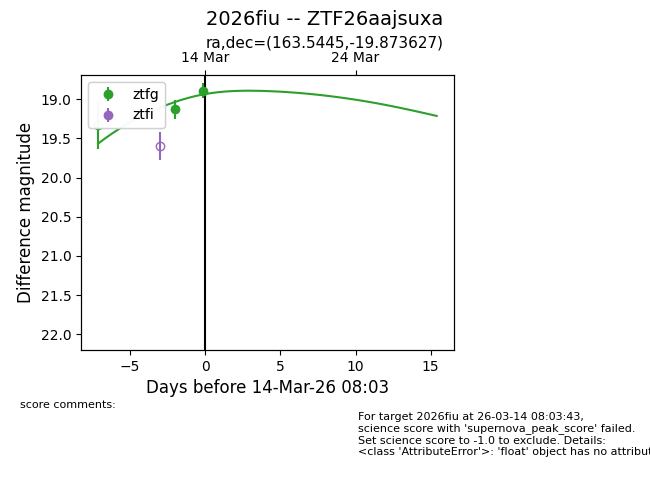
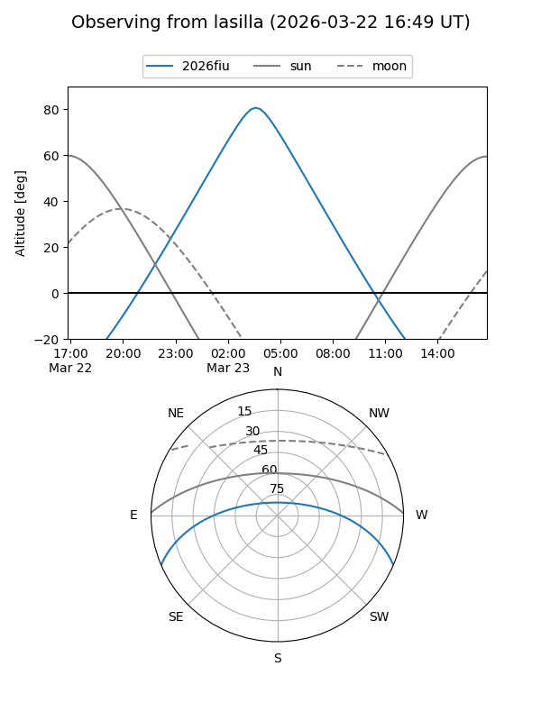
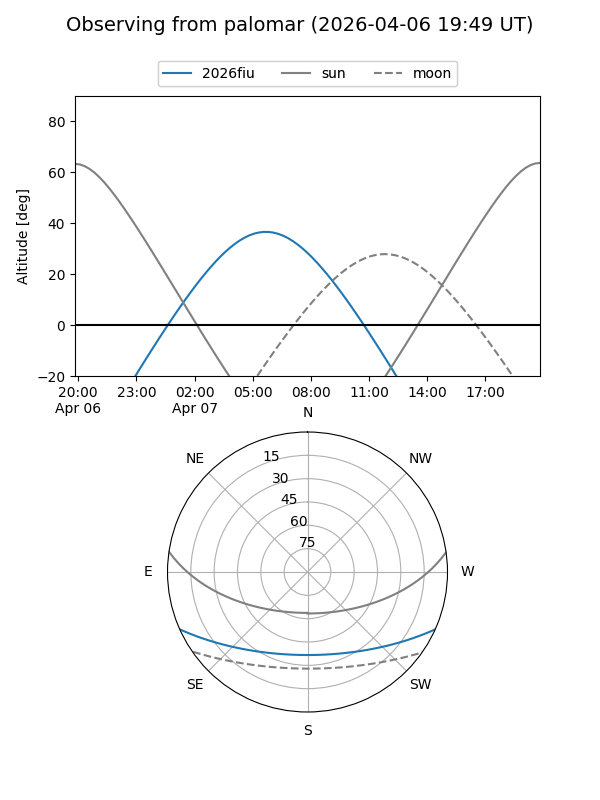
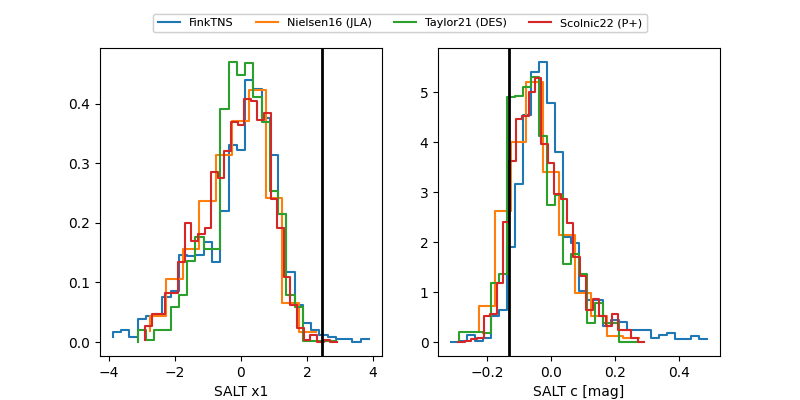

2026fiu
Target 2026fiu at 2026-03-14 08:05
Aliases and brokers:
FINK: link
Lasair: link
ALeRCE: link
TNS: link
YSE: link
alt names
ZTF26aajsuxa (ztf,fink_ztf)
2026fiu (tns,yse)
Coordinates:
equatorial (ra, dec) = 163.5445,-19.87363
equatorial (HMS+DMS) = 10:54:10.69,-19:52:25.06
galactic (l, b) = (268.6898,+35.08504)
Flags:
Photometry:
last ztfg=18.89
2 ztfg detections
Lightcurve

Visibility


Additional plots
